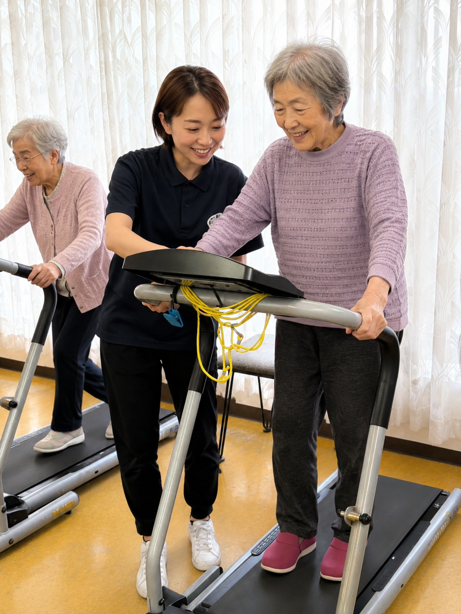
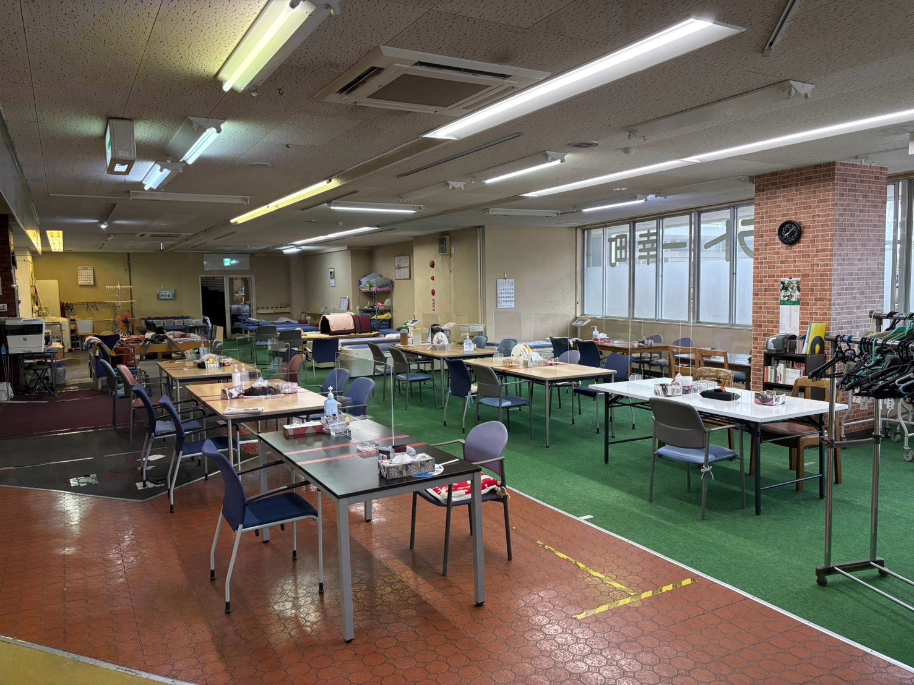
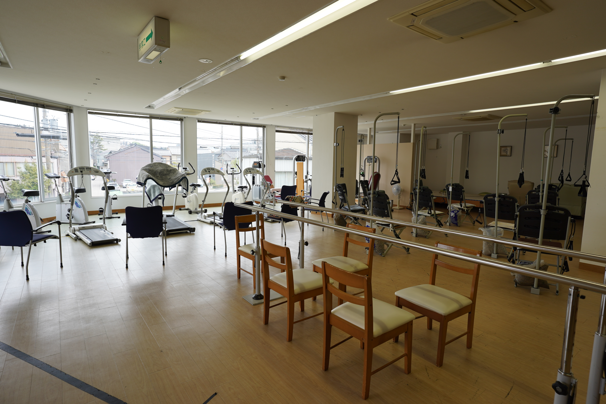
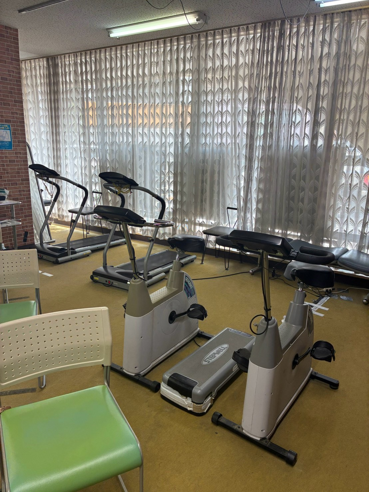
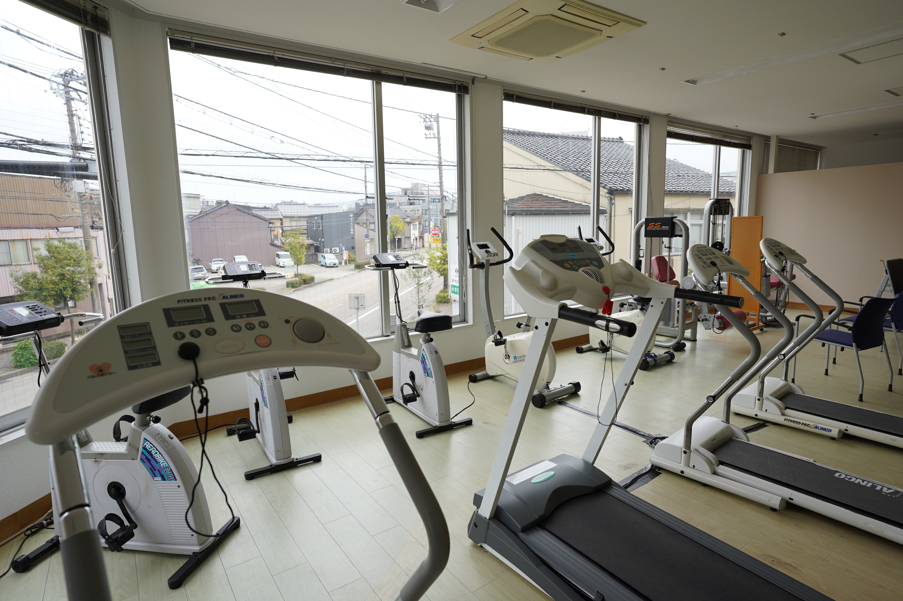
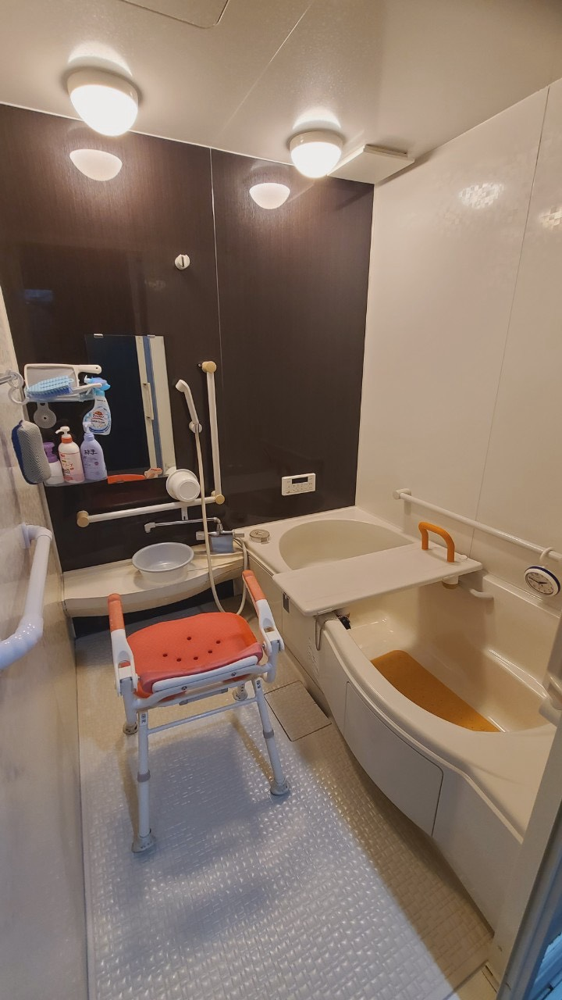

KANAZAWA · SAIWAI-CHO
あなたに合う、
1階か2階か。
運動も、休む時間も、人との会話も。
ご利用開始前に、過ごし方に合うフロアをご相談のうえご案内します。
掲載している人物は、プライバシー保護のためAI加工しています。
SAIWAI-CHO STYLE
同じ建物に、
2つの過ごし方があります。
幸町店は、1階と2階で雰囲気もできることも異なります。見学時に、体調や目標、好きな過ごし方を伺い、ご本人に合うフロアをご相談のうえご案内します。利用中に、その日の気分で1階・2階を移動する運用ではありません。

動いたあとに、
ほっとする時間も。
「運動もしたい。でも、無理をしすぎずに体を休める時間もほしい」。そうした過ごし方を希望される方に、1階をご案内します。会話や集団での体操を通じて、人と人との交流が生まれます。
- 平行棒、ルームランナー、エアロバイク
- タオル体操、ダンベル体操
- マッサージ、メドマー、ウォーターベッド
- 岩盤浴、あったか姫
歩くことに、
しっかり向き合う日。
「とにかく運動をしたい」「歩くことに自信をつけて、外出の機会を増やしたい」。2階は、明るく開放的な空間で、身体を動かすことに集中したい方のフロアです。
- 平行棒で下肢の運動に取り組む
- ルームランナー、エアロバイクなどのマシン運動
- 歩行を安定させるための練習
- 横になって休める場所あり

SPACE & EQUIPMENT
見学で、空間の違いを
確かめてください。



VACANCY
現在の空き状況
空き状況シートを表示しています。ご利用開始の可否は、送迎エリアや曜日なども含めてお電話で最終確認します。
PRICE SIMULATOR
料金の目安を確認する
要介護度・利用区分・利用回数から、1割負担の場合の概算を確認できます。食費、入浴、送迎、各種加算などで金額は変わります。
料金根拠：幸町店の重要事項説明書（2026年6月版）。通所介護の基本料金表には、個別機能訓練加算Ⅰ・サービス提供体制強化加算Ⅰ・介護職員等処遇改善加算Ⅰを含みます。介護予防型・基準緩和型の表には、各資料に記載の介護職員等処遇改善加算Ⅱを含みます。
Q & A
よくあるご質問
どちらのフロアになるか、どう決まりますか？
運動量、休憩の取り方、人との交流などのご希望を伺い、ご利用開始前にご相談のうえフロアをご案内します。利用中に、その日の気分で1階・2階を移動する運用ではありません。
1階と2階で利用できる内容は違いますか？
1階は運動とリラクゼーション、2階は運動に集中できる環境です。2階にはリラクゼーション機器はありませんが、横になって休める場所があり、入浴もご相談いただけます。
見学や相談はできますか？
可能です。曜日ごとの空き状況も含め、まずはお気軽にお電話ください。
送迎の範囲は？
通常の実施地域は金沢市です。詳しい送迎可否は住所と曜日を伺って確認します。